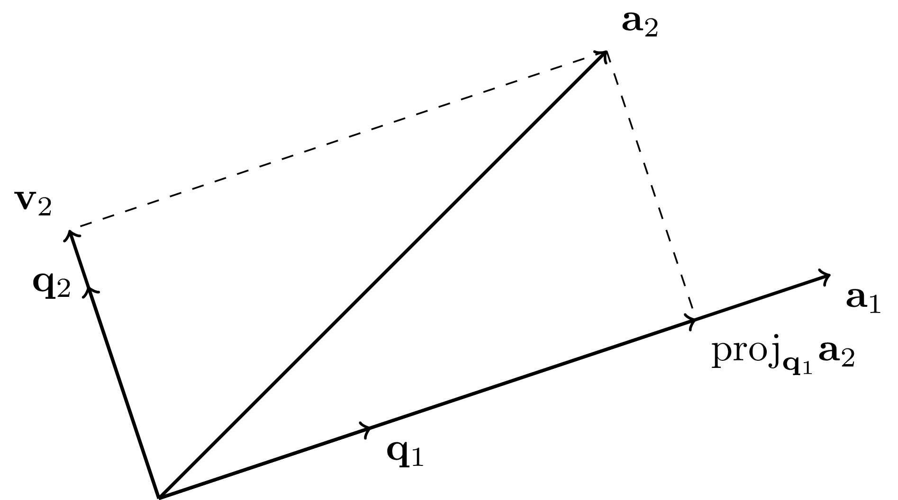
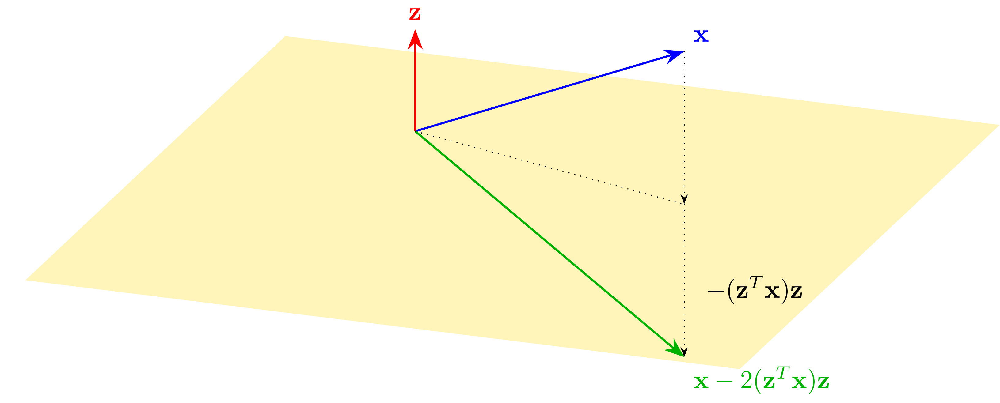

\(\newcommand{\bmu}{\boldsymbol{\mu}}\) \(\newcommand{\bSigma}{\boldsymbol{\Sigma}}\) \(\newcommand{\bfbeta}{\boldsymbol{\beta}}\) \(\newcommand{\bflambda}{\boldsymbol{\lambda}}\) \(\newcommand{\bgamma}{\boldsymbol{\gamma}}\) \(\newcommand{\bsigma}{{\boldsymbol{\sigma}}}\) \(\newcommand{\bpi}{\boldsymbol{\pi}}\) \(\newcommand{\btheta}{{\boldsymbol{\theta}}}\) \(\newcommand{\bphi}{\boldsymbol{\phi}}\) \(\newcommand{\balpha}{\boldsymbol{\alpha}}\) \(\newcommand{\blambda}{\boldsymbol{\lambda}}\) \(\renewcommand{\P}{\mathbb{P}}\) \(\newcommand{\E}{\mathbb{E}}\) \(\newcommand{\indep}{\perp\!\!\!\perp} \newcommand{\bx}{\mathbf{x}}\) \(\newcommand{\bp}{\mathbf{p}}\) \(\renewcommand{\bx}{\mathbf{x}}\) \(\newcommand{\bX}{\mathbf{X}}\) \(\newcommand{\by}{\mathbf{y}}\) \(\newcommand{\bY}{\mathbf{Y}}\) \(\newcommand{\bz}{\mathbf{z}}\) \(\newcommand{\bZ}{\mathbf{Z}}\) \(\newcommand{\bw}{\mathbf{w}}\) \(\newcommand{\bW}{\mathbf{W}}\) \(\newcommand{\bv}{\mathbf{v}}\) \(\newcommand{\bV}{\mathbf{V}}\) \(\newcommand{\bfg}{\mathbf{g}}\) \(\newcommand{\bfh}{\mathbf{h}}\) \(\newcommand{\horz}{\rule[.5ex]{2.5ex}{0.5pt}}\) \(\renewcommand{\S}{\mathcal{S}}\) \(\newcommand{\X}{\mathcal{X}}\) \(\newcommand{\var}{\mathrm{Var}}\) \(\newcommand{\pa}{\mathrm{pa}}\) \(\newcommand{\Z}{\mathcal{Z}}\) \(\newcommand{\bh}{\mathbf{h}}\) \(\newcommand{\bb}{\mathbf{b}}\) \(\newcommand{\bc}{\mathbf{c}}\) \(\newcommand{\cE}{\mathcal{E}}\) \(\newcommand{\cP}{\mathcal{P}}\) \(\newcommand{\bbeta}{\boldsymbol{\beta}}\) \(\newcommand{\bLambda}{\boldsymbol{\Lambda}}\) \(\newcommand{\cov}{\mathrm{Cov}}\) \(\newcommand{\bfk}{\mathbf{k}}\) \(\newcommand{\idx}[1]{}\) \(\newcommand{\xdi}{}\)
2.4. QR decomposition and Householder transformations#
We have some business left over from previous sections: constructing orthonormal bases. We go over the Gram-Schimidt algorithm below. Through a matrix factorization perspective, we give an alternative way to solve the linear least squares problem.
2.4.1. Matrix form of Gram-Schmidt#
In this subsection, we prove the Gram-Schmidt Theorem and introduce a fruitful matrix perspective.
Gram-Schmidt algorithm Let \(\mathbf{a}_1,\ldots,\mathbf{a}_m\) be linearly independent. We use the Gram-Schmidt algorithm\(\idx{Gram-Schmidt algorithm}\xdi\) to obtain an orthonormal basis of \(\mathrm{span}(\mathbf{a}_1,\ldots,\mathbf{a}_m)\). The process takes advantage of the properties of the orthogonal projection derived above. In essence we add the vectors \(\mathbf{a}_i\) one by one, but only after taking out their orthogonal projection on the previously included vectors. The outcome spans the same subspace and the Orthogonal Projection Theorem ensures orthogonality.
Proof idea: (Gram-Schmidt) Suppose first that \(m=1\). In that case, all that needs to be done is to divide \(\mathbf{a}_1\) by its norm to obtain a unit vector whose span is the same as \(\mathbf{a}_1\), that is, we set \(\mathbf{q}_1 = \frac{\mathbf{a}_1}{\|\mathbf{a}_1\|}\).
Suppose now that \(m=2\). We first let \(\mathbf{q}_1 = \frac{\mathbf{a}_1}{\|\mathbf{a}_1\|}\) as in the previous case. Then we subtract from \(\mathbf{a}_2\) its projection on \(\mathbf{q}_1\), that is, we set \(\mathbf{v}_2 = \mathbf{a}_2 - \langle \mathbf{q}_1, \mathbf{a}_2 \rangle \,\mathbf{q}_1\). It is easily checked that \(\mathbf{v}_2\) is orthogonal to \(\mathbf{q}_1\) (see the proof of the Orthogonal Projection Theorem for a similar calculation). Moreover, because \(\mathbf{a}_2\) is a linear combination of \(\mathbf{q}_1\) and \(\mathbf{v}_2\), we have \(\mathrm{span}(\mathbf{q}_1,\mathbf{v}_2) = \mathrm{span}(\mathbf{a}_1,\mathbf{a}_2)\). It remains to divide by the norm of the resulting vector: \(\mathbf{q}_2 = \frac{\mathbf{v}_2}{\|\mathbf{v}_2\|}\).
For general \(m\), we proceed similarly but project onto the subspace spanned by the previously added vectors at each step.

Proof: (Gram-Schmidt) The first step of the induction is described above. Then the general inductive step is the following. Assume that we have constructed orthonormal vectors \(\mathbf{q}_1,\ldots,\mathbf{q}_{j-1}\) such that
Constructing \(\mathbf{q}_j\): By the Properties of Orthonormal Lists, \(\{\mathbf{q}\}_{i=1}^{j-1}\) is an independent list and therefore forms an orthonormal basis for \(U_{j-1}\). So we can compute the orthogonal projection of \(\mathbf{a}_j\) on \(U_{j-1}\) as
where we defined \(r_{ij} = \langle \mathbf{q}_i , \mathbf{a}_j\rangle\). And we set
The last step is possible because:
LEMMA \(\|\mathbf{v}_j\| > 0\). \(\flat\)
Proof: Indeed otherwise \(\mathbf{a}_j\) would be equal to its projection \(\mathrm{proj}_{U_{j-1}}\mathbf{a}_j \in \mathrm{span}(\mathbf{a}_1,\ldots,\mathbf{a}_{j-1})\) which would contradict linear independence of the \(\mathbf{a}_k\)’s. \(\square\)
The vector \(\mathbf{q}_j\) is of unit norm by construction. It is also orthogonal to \(\mathrm{span}(\mathbf{q}_1,\ldots,\mathbf{q}_{j-1})\) by the definition of \(\mathbf{v}_j\) and the Orthogonal Projection Theorem. So \(\mathbf{q}_1,\ldots,\mathbf{q}_j\) form an orthonormal list.
Pushing the induction through: It remains to prove that \(\mathrm{span}(\mathbf{q}_1,\ldots,\mathbf{q}_j) = \mathrm{span}(\mathbf{a}_1,\ldots,\mathbf{a}_j)\). Because by induction \(\mathrm{span}(\mathbf{q}_1,\ldots,\mathbf{q}_{j-1}) = \mathrm{span}(\mathbf{a}_1,\ldots,\mathbf{a}_{j-1})\), all we have to prove are the following two claims.
LEMMA \(\mathbf{q}_j \in \mathrm{span}(\mathbf{a}_1,\ldots,\mathbf{a}_j)\). \(\flat\)
Proof: By construction,
By definition of the orthogonal projection,
Hence we have written \(\mathbf{q}_j\) as a linear combination of vectors in \(\mathrm{span}(\mathbf{a}_1,\ldots,\mathbf{a}_{j})\). That proves the claim. \(\square\)
LEMMA \(\mathbf{a}_j \in \mathrm{span}(\mathbf{q}_1,\ldots,\mathbf{q}_j)\). \(\flat\)
Proof: Unrolling the calculations above, \(\mathbf{a}_j\) can be re-written as the following linear combination of \(\mathbf{q}_1,\ldots,\mathbf{q}_j\)
where we defined \(r_{jj} = \left\|\mathbf{a}_j - \sum_{i=1}^{j-1} r_{ij}\,\mathbf{q}_i\right\| = \|\mathbf{v}_j\|\). \(\square\)
Hence \(\mathbf{q}_1,\ldots,\mathbf{q}_j\) forms an orthonormal list with \(\mathrm{span}(\mathbf{a}_1,\ldots,\mathbf{a}_{j})\). So induction goes through. That concludes the proof of the theorem. \(\square\)
We implement the Gram-Schmidt algorithm in Python. For reasons that will become clear in the next subsection, we output both the \(\mathbf{q}_j\)’s and \(r_{ij}\)’s, each in matrix form. Here we use numpy.dot to compute inner products.
def gramschmidt(A):
(n,m) = A.shape
Q = np.zeros((n,m))
R = np.zeros((m,m))
for j in range(m):
v = np.copy(A[:,j])
for i in range(j):
R[i,j] = np.dot(Q[:,i], A[:,j])
v -= R[i,j]*Q[:,i]
R[j,j] = LA.norm(v)
Q[:,j] = v/R[j,j]
return Q, R
NUMERICAL CORNER: Let’s try a simple example.
w1 = np.array([1., 0., 1.])
w2 = np.array([0., 1., 1.])
A = np.stack((w1, w2),axis=-1)
print(A)
[[1. 0.]
[0. 1.]
[1. 1.]]
Q, R = gramschmidt(A)
print(Q)
[[ 0.70710678 -0.40824829]
[ 0. 0.81649658]
[ 0.70710678 0.40824829]]
print(R)
[[1.41421356 0.70710678]
[0. 1.22474487]]
\(\unlhd\)
Matrix form Let \(\mathbf{a}_1,\ldots,\mathbf{a}_m \in \mathbb{R}^n\) be linearly independent. Above, we presented the Gram-Schmidt algorithm to obtain an orthonormal basis of \(\mathrm{span}(\mathbf{a}_1,\ldots,\mathbf{a}_m)\). We revisit it in matrix form.
Let
Recalling that, for all \(j\),
the output of the Gram-Schmidt algorithm can be written in the following compact form, known as a QR decomposition\(\idx{QR decomposition}\xdi\),
where column \(i\) of the \(m \times m\) matrix \(R\) contains the coefficients of the linear combination of the \(\mathbf{q}_j\)’s that produce \(\mathbf{a}_i\).
By the proof of the Gram-Schmidt Theorem, \(\mathbf{a}_i \in \mathrm{span}(\mathbf{q}_1,\ldots,\mathbf{q}_i)\). So column \(i\) of \(R\) has only zeros below the diagonal. Hence \(R\) has a special structure we have previously encountered: it is upper triangular. The proof also established that the diagonal elements of \(R\) are strictly positive.
DEFINITION (Triangular matrix) \(\idx{triangular matrix}\xdi\) A matrix \(R = (r_{ij})_{i,j} \in \mathbb{R}^{n \times m}\) is upper-triangular if all entries below the diagonal are zero, that is, if \(i > j\) implies \(r_{ij} = 0\). Similarly, a lower-triangular matrix has zeros above the diagonal. \(\natural\)
An upper-triangular matrix looks like this
Remarks:
a) If the input vectors \(\mathbf{a}_1,\ldots,\mathbf{a}_m\) are not linearly independent (in which case we say that the matrix \(A\) is rank-deficient), the Gram-Schmidt algorithm will fail. Indeed, at some point we will have that \(\mathbf{a}_j \in U_{j-1}\) and the normalization of \(\mathbf{v}_j\) will not be possible. In that case, one can instead use a technique called column pivoting, which we will not describe.
b) The QR decomposition we have derived here is technically called a reduced QR decomposition. In a full QR decomposition\(\idx{full QR decomposition}\xdi\), the matrix \(Q\) is square and orthogonal. In other words, the columns of such a \(Q\) form an orthonormal basis of the full space \(\mathbb{R}^n\). Let \(A = Q_1 R_1\) be a reduced QR decomposition, as obtained through the Gram-Schmidt algorithm. Then the columns of \(Q_1\) form an orthonormal basis of \(\mathrm{col}(A)\) and can be completed into an orthonormal basis of \(\mathbb{R}^n\) by adding further vectors \(\mathbf{q}_{m+1},\ldots,\mathbf{q}_{n}\). Let \(Q_2\) be the matrix with columns \(\mathbf{q}_{m+1},\ldots,\mathbf{q}_{n}\). Then a full QR decomposition of \(A\) is
where \(\mathbf{0}_{(n-m)\times m}\) is the all-zero matrix of size \((n-m)\times m\). A numerical method for computing a full QR decomposition is presented in a later subsection.
c) The Gram-Schmidt algorithm is appealing geometrically, but it is known to have numerical issues. Other methods exist for computing QR decompositions with better numerical properties. We discuss such a method in a later subsection. (See that same subsection for an example where the \(\mathbf{q}_j\)’s produced by Gram-Schmidt are far from orthogonal.)
2.4.2. Least squares via QR#
Let \(A \in \mathbb{R}^{n\times m}\) be an \(n\times m\) matrix with linearly independent columns and let \(\mathbf{b} \in \mathbb{R}^n\) be a vector. Recall that a solution \(\mathbf{x}^*\) to the linear least squares problem
satisfies the normal equations
Solving the normal equations In a first linear algebra course, one learns how to solve linear systems such as the normal equations. For this task a common approach is Gaussian elimination, or row reduction. Quoting Wikipedia:
To perform row reduction on a matrix, one uses a sequence of elementary row operations to modify the matrix until the lower left-hand corner of the matrix is filled with zeros, as much as possible. […] Once all of the leading coefficients (the leftmost nonzero entry in each row) are 1, and every column containing a leading coefficient has zeros elsewhere, the matrix is said to be in reduced row echelon form. […] The process of row reduction […] can be divided into two parts. The first part (sometimes called forward elimination) reduces a given system to row echelon form, from which one can tell whether there are no solutions, a unique solution, or infinitely many solutions. The second part (sometimes called back substitution) continues to use row operations until the solution is found; in other words, it puts the matrix into reduced row echelon form.
Figure: An example of Gaussian elimination (Source)

\(\bowtie\)
We will not go over Gaussian elimination here. In this subsection, we develop an alternative approach to solving the normal equations using the QR decomposition. We will need one component of Gaussian elimination, back substitution\(\idx{back substitution}\xdi\). It is based on the observation that triangular systems of equations are straightforward to solve. We start with an example.
EXAMPLE: Here is a concrete example of back substitution. Consider the system \(R \mathbf{x} = \mathbf{b}\) with
That corresponds to the linear equations
The third equation gives \(x_3 = 0/2 = 0\). Plugging into the second one, we get \(x_2 = -2 - x_3 = -2\). Plugging into the first one, we finally have \(x_1 = (x_2 - 2 x_3)/2 = -1\). So the solution is \(\mathbf{x} = (-1,-2,0)\). \(\lhd\)
In general, solving a triangular system of equations works as follows. Let \(R = (r_{i,j})_{i,j} \in \mathbb{R}^{m \times m}\) be upper-triangular and let \(\mathbf{b} \in \mathbb{R}^m\) be the left-hand vector, i.e., we want to solve the system
Starting from the last row of the system, \(r_{m,m} x_m = b_m\) or \(x_m = b_m/r_{m,m}\), assuming that \(r_{m,m} \neq 0\). Moving to the second-to-last row, \(r_{m-1,m-1} x_{m-1} + r_{m-1,m} x_m = b_{m-1}\) or \(x_{m-1} = (b_{m-1} - r_{m-1,m} x_m)/r_{m-1,m-1}\), assuming that \(r_{m-1,m-1} \neq 0\). And so on. This procedure is known as back substitution.
Analogously, in the lower triangular case \(L \in \mathbb{R}^{m \times m}\), we have forward substitution\(\idx{forward substitution}\xdi\). These procedures implicitly define an inverse for \(R\) and \(L\) when the diagonal elements are all non-zero. We will not write them down explicitly here.
We implement back substitution in Python. In our naive implementation, we assume that the diagonal entries are not zero, which will suffice for our purposes.
def backsubs(R,b):
m = b.shape[0]
x = np.zeros(m)
for i in reversed(range(m)):
x[i] = (b[i] - np.dot(R[i,i+1:m],x[i+1:m]))/R[i,i]
return x
Forward substitution is implemented similarly.
def forwardsubs(L,b):
m = b.shape[0]
x = np.zeros(m)
for i in range(m):
x[i] = (b[i] - np.dot(L[i,0:i],x[0:i]))/L[i,i]
return x
Using QR We show how to solve the normal equations via the QR decomposition.
1- Construct an orthonormal basis of \(\mathrm{col}(A)\) through a QR decomposition
2- Form the orthogonal projection matrix
3- Apply the projection to \(\mathbf{b}\) and observe that, by the proof of the Normal Equations, \(\mathbf{x}^*\) satisfies
4- Plug in the QR decomposition for \(A\) to get
5- Multiply both sides by \(Q^T\) and use \(Q^T Q = I_{m \times m}\)
6- Solving this system for \(\mathbf{x}^*\) is straightforward because \(R\) is upper triangular via back substitution.
THEOREM (Least Squares via QR) \(\idx{least squares via QR}\xdi\) Let \(A \in \mathbb{R}^{n\times m}\) be an \(n\times m\) matrix with linearly independent columns, let \(\mathbf{b} \in \mathbb{R}^n\) be a vector, and let \(A = QR\) be a QR decomposition of \(A\). The solution to the linear least-squares problem
satisfies
\(\sharp\)
Note that, in reality, we do not need to form the matrix \(Q Q^T\).
We implement the QR approach to least squares.
def ls_by_qr(A, b):
Q, R = gramschmidt(A)
return backsubs(R, Q.T @ b)
NUMERICAL CORNER: We return to our simple overdetermined system example.
w1 = np.array([1., 0., 1.])
w2 = np.array([0., 1., 1.])
A = np.stack((w1, w2),axis=-1)
b = np.array([0., 0., 2.])
x = ls_by_qr(A, b)
print(x)
[0.66666667 0.66666667]
\(\unlhd\)
2.4.3. Householder transformations#
While the Gram-Schmidt algorithm gives a natural way to compute a (reduced) QR decomposition, there are many other numerical algorithms for this purpose. Some have better numerical behavior, specifically in terms of how they handle roundoff error. Quoting Wikipedia:
A roundoff error, also called rounding error, is the difference between the result produced by a given algorithm using exact arithmetic and the result produced by the same algorithm using finite-precision, rounded arithmetic. Rounding errors are due to inexactness in the representation of real numbers and the arithmetic operations done with them. […] When a sequence of calculations with an input involving roundoff error are made, errors may accumulate, sometimes dominating the calculation.
We will not prove this here, but the following method based on Householder reflections is numerically more stable.
Recall that a square matrix \(Q \in \mathbb{R}^{m\times m}\) is orthogonal if \(Q^T Q = Q Q^T = I_{m \times m}\). In words, the matrix inverse of \(Q\) is its transpose. This is equivalent to the columns of \(Q\) forming an orthonormal basis of \(\mathbb{R}^m\) (why?).
It can be shown that the product of two orthogonal matrices \(Q_1\) and \(Q_2\) is also orthogonal. (Try it!)
An important property of orthogonal matrices is that they preserve inner products: if \(Q \in \mathbb{R}^{m\times m}\) is orthogonal, then for any \(\mathbf{x}, \mathbf{y} \in \mathbb{R}^m\)
In particular, orthogonal matrices preserve norms and angles.
Reflections One such family of transformations are reflections.
DEFINITION (Hyperplane) \(\idx{hyperplane}\xdi\) A hyperplane \(W\) is a linear subspace of \(\mathbb{R}^m\) of dimension \(m-1\). \(\natural\)
DEFINITION (Householder Reflection) \(\idx{Householder reflection}\xdi\) Let \(\mathbf{z} \in \mathbb{R}^m\) be a unit vector and let \(W\) be the hyperplane orthogonal to it. The reflection across \(W\) is given by
This is referred to as a Householder reflection. \(\natural\)
In words, we subtract twice the projection onto \(\mathbf{z}\), as depicted below.

LEMMA Let \(H = I_{m\times m} - 2\mathbf{z}\mathbf{z}^T\) be a Householder reflection. Then \(H\) is an orthogonal matrix. \(\flat\)
Proof: We check the definition:
which is equal to \(I_{m\times m}\). The calculation for \(H H^T\) is the same.\(\square\)
QR decomposition by introducing zeros We return to QR decompositions. One way to construct a (full) QR decomposition of a matrix \(A \in \mathbb{R}^{n \times m}\) is to find a sequence of orthogonal matrices \(H_1, \ldots, H_m\) that triangularize \(A\):
for an upper-triangular matrix \(R\). Indeed, by the properties of orthogonal matrices, we then have
where \(Q = H_1^T H_2^T \cdots H_m^T\) is itself orthogonal as a product of orthogonal matrices. So to proceed we need to identify orthogonal matrices that have the effect of introducing zeros below the diagonal, as illustrated below:
It turns out that a well-chosen Householder reflection does the trick. Let \(\mathbf{y}_1\) be the first column of \(A\) and take
where \(\mathbf{e}_1^{(n)}\) is the first vector in the canonical basis of \(\mathbb{R}^n\). As depicted below, this choice sends \(\mathbf{y}_1\) to
(It is clear that if \(H_1 \mathbf{y}_1\) is proportional to \(\mathbf{e}_1^{(n)}\), than it can only be \(\|\mathbf{y}_1\| \mathbf{e}_1^{(n)}\) or \(-\|\mathbf{y}_1\| \mathbf{e}_1^{(n)}\). Prove it!)

LEMMA (Householder) \(\idx{Householder lemma}\xdi\) Let \(\mathbf{y}_1\), \(\mathbf{z}_1\) and \(H_1\) be as above. Then
\(\flat\)
Proof idea: The proof by picture is in the figure above.
Proof: Note that
and
where we used the previous equation. Hence
That establishes the claim. \(\square\)
The upshot is that multiplying \(A\) by \(H_1\) introduces zeros below the diagonal in the first column. To see this, recall that one interpretation of the matrix-matrix product is that each column of the second matrix gets multiplied by the first one. By the Householder Lemma, applying \(H_1\) to \(A\) gives
So the first column is now proportional to \(\mathbf{e}_1\), which has zeros in all but the first element. (What should we do if \(\mathbf{y}_1\) is already equal to \(\|\mathbf{y}_1\| \mathbf{e}_1^{(n)}\)?)
It turns that there is another choice of Householder reflection. Indeed, it can be shown that
are such that \(\tilde{H}_1 \mathbf{y}_1 = - \|\mathbf{y}_1\| \,\mathbf{e}_1^{(n)}\) (try it!).
Putting everything together We have shown how to introduce zeros below the diagonal in the first column of a matrix. To introduce zeros in the second column below the diagonal we use a block matrix. Recall that if \(A_{ij} \in \mathbb{R}^{n_i \times m_j}\) and \(B_{ij} \in \mathbb{R}^{m_i \times p_j}\) for \(i,j = 1, 2\), then we have the following formula
Now consider the following block matrix
where \(F_2\) is the following Householder reflection. Write the second column of \(H_1 A\) as \((y^{(2)}, \mathbf{y}_2)\). That is, \(\mathbf{y}_2\) are the entries \(2,\ldots, n\) of that column. Define
where now \(\mathbf{e}_1^{(n-1)} \in \mathbb{R}^{n-1}\). By the Householder Lemma, we have \(F_2 \mathbf{y}_2 = \|\mathbf{y}_2\| \mathbf{e}_1^{(n-1)}\). It can be shown that \(\mathbf{y}_2 \neq \mathbf{0}\) when the columns of \(A\) are linearly independent. (Try it!)
Applying \(H_2\) to \(H_1 A\) preserves the first row and column, and introduces zeros under the diagonal in the second column. To see this, first re-write \(H_1 A\) in block form
where we used our previous observation about the first column of \(H_1 A\) and where \(\mathbf{g}_2 \in \mathbb{R}^{m-1}\), \(G_2 \in \mathbb{R}^{(n-1)\times (m-1)}\). One important point to note: the first column of \(G_2\) is equal to \(\mathbf{y}_2\). Now multiply by \(H_2\) to get
Computing the block \(F_2 G_2\) column by column we get
where \((G_2)_{\cdot,j}\) is the \(j\)-th column of \(G_2\). So the second column of \(H_2 H_1 A\) has zeros in all but the first two elements.
And so on. At Step \(k\), we split the \(k\)-th column of \(H_{k-1} \cdots H_1 A\) into its first \(k-1\) and last \(n-k+1\) entries \((\mathbf{y}^{(k)}, \mathbf{y}_k)\) and form the matrix
where
This time the first \(k-1\) rows and columns are preserved, while zeros are introduced under the diagonal of the \(k\)-th column. We omit the details (try it!).
We implement the procedure above in Python. We will need the following function. For \(\alpha \in \mathbb{R}\), let the sign of \(\alpha\) be
In Python, this is done using the function numpy.sign.
The following function constructs the upper triangular matrix \(R\) by iteratively modifying the relevant block of \(A\). On the other hand, computing the matrix \(Q\) actually requires extra computational work that is often not needed. We saw that, in the context of the least-squares problem, we really only need to compute \(Q^T \mathbf{b}\) for some input vector \(\mathbf{b}\). This can be done at the same time that \(R\) is constructed, as follows. The key point to note is that \(Q^T \mathbf{b} = H_m \cdots H_1 \mathbf{b}\).
In our implementation of householder, we use both reflections defined above. We will not prove this here, but the particular choice made has good numerical properties. Quoting [TB, Lecture 10] (where \(H^+\) refers to the hyperplane used for the reflection when \(z=1\)):
Mathematically, either choice of sign is satisfactory. However, this is a case where numerical stability – insensitivity to rounding errors – dictates that one choice should be taken rather than the other. For numerical stability, it is desirable to reflect \(\mathbf{x}\) to the vector \(z \|\mathbf{x}\| \mathbf{e}_1\) that is not too close to \(\mathbf{x}\) itself. […] Suppose that [in the figure above] the angle between \(H^+\) and the \(\mathbf{e}_1\) axis is very small. Then the vector \(\mathbf{v} = \|\mathbf{x}\| \mathbf{e}_1 - \mathbf{x}\) is much smaller than \(\mathbf{x}\) or \(\|\mathbf{x}\| \mathbf{e}_1\). Thus the calculation of \(\mathbf{v}\) represents a subtraction of nearby quantities and will tend to suffer from cancellation errors.
We use numpy.outer to compute \(\mathbf{z} \mathbf{z}^T\), which is referred to as an outer product. See here for an explanation of numpy.copy.
def householder(A, b):
n, m = A.shape
R = np.copy(A)
Qtb = np.copy(b)
for k in range(m):
y = R[k:n,k]
e1 = np.zeros(n-k)
e1[0] = 1
z = np.sign(y[0]) * LA.norm(y) * e1 + y
z = z / LA.norm(z)
R[k:n,k:m] = R[k:n,k:m] - 2 * np.outer(z, z) @ R[k:n,k:m]
Qtb[k:n] = Qtb[k:n] - 2 * np.outer(z, z) @ Qtb[k:n]
return R[0:m,0:m], Qtb[0:m]
NUMERICAL CORNER: We return to our overdetermined system example.
w1 = np.array([1., 0., 1.])
w2 = np.array([0., 1., 1.])
A = np.stack((w1, w2),axis=-1)
b = np.array([0., 0., 2.])
R, Qtb = householder(A, b)
x = backsubs(R, Qtb)
print(x)
[0.66666667 0.66666667]
One advantage of the Householder approach is that it produces a matrix \(Q\) with very good orthogonality, i.e., \(Q^T Q \approx I\). We give a quick example below comparing Gram-Schmidt and Householder. (The choice of matrix \(A\) will become clearer when we discuss the singular value decomposition in a later chapter.)
seed = 535
rng = np.random.default_rng(seed)
n = 50
U, W = LA.qr(rng.normal(0,1,(n,n)))
V, W = LA.qr(rng.normal(0,1,(n,n)))
S = np.diag((1/2) ** np.arange(1,n+1))
A = U @ S @ V.T
Qgs, Rgs = gramschmidt(A)
print(LA.norm(A - Qgs @ Rgs))
print(LA.norm(Qgs.T @ Qgs - np.identity(n)))
1.4369568046009742e-16
19.745599060592102
As you can see above, the \(Q\) and \(R\) factors produced by the Gram-Schmidt algorithm do have the property that \(QR \approx A\). However, \(Q\) is far from orthogonal. (Recall that LA.norm computes the Frobenius norm introduced previously.)
On the other hand, Householder reflections perform much better in that respect as we show next. Here we use the implementation of Householder transformations in numpy.linalg.qr.
Qhh, Rhh = LA.qr(A)
print(LA.norm(A - Qhh @ Rhh))
print(LA.norm(Qhh.T @ Qhh - np.identity(n)))
4.739138228891714e-16
5.33506987519293e-15
\(\unlhd\)
Self-assessment quiz (with help from Claude, Gemini, and ChatGPT)
1 Which of the following matrices is upper triangular?
a) \(\begin{pmatrix} 1 & 2 \\ 0 & 3 \end{pmatrix}\)
b) \(\begin{pmatrix} 1 & 0 \\ 2 & 3 \end{pmatrix}\)
c) \(\begin{pmatrix} 0 & 1 \\ 1 & 0 \end{pmatrix}\)
d) \(\begin{pmatrix} 1 & 2 \\ 3 & 4 \end{pmatrix}\)
2 What is the output of the Gram-Schmidt algorithm when applied to a set of linearly independent vectors?
a) An orthogonal basis for the subspace spanned by the vectors.
b) An orthonormal basis for the subspace spanned by the vectors.
c) A set of linearly dependent vectors.
d) A single vector that is orthogonal to all the input vectors.
3 What is the dimension of a hyperplane in \(\mathbb{R}^m\)?
a) \(m\)
b) \(m - 1\)
c) \(m - 2\)
d) 1
4 Which of the following is true about a Householder reflection?
a) It is a reflection across a hyperplane orthogonal to a unit vector.
b) It is a reflection across a unit vector.
c) It is a rotation around a hyperplane orthogonal to a unit vector.
d) It is a rotation around a unit vector.
5 How can a sequence of Householder reflections be used to compute a QR decomposition of a matrix \(A\)?
a) By iteratively introducing zeros above the diagonal of \(A\).
b) By iteratively introducing zeros below the diagonal of \(A\).
c) By iteratively introducing zeros on the diagonal of \(A\).
d) By iteratively introducing zeros in the entire matrix \(A\).
Answer for 1: a. Justification: The text defines an upper triangular matrix as one with all entries below the diagonal equal to zero.
Answer for 2: b. Justification: The text states that the Gram-Schmidt algorithm “produces an orthonormal basis of \(\mathrm{span}(a_1, \dots, a_m)\).”
Answer for 3: b. Justification: The text defines a hyperplane as a linear subspace of \(\mathbb{R}^m\) of dimension \(m - 1\).
Answer for 4: a. Justification: The text defines a Householder reflection as follows: “Let \(\mathbf{z} \in \mathbb{R}^m\) be a unit vector and let \(W\) be the hyperplane orthogonal to it. The reflection across \(W\) is given by \(H = I_{m \times m} - 2\mathbf{z}\mathbf{z}^T\).”
Answer for 5: b. Justification: The text states, “One way to construct a (full) QR decomposition of a matrix \(A \in \mathbb{R}^{n \times m}\) is to find a sequence of orthogonal matrices \(H_1,\ldots,H_m\) that triangularize \(A\): \(H_m \cdots H_2H_1A = R\) for an upper-triangular matrix \(R\).”